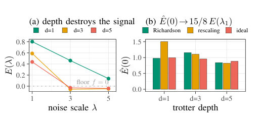
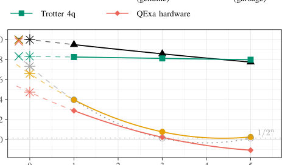
← Index · ← Previous · Next →
Authors: Anish Koley, Saranyo Moitra, Inti Sodemann Villadiego
Type: theory · Category: strongly correlated electrons · PDF: https://arxiv.org/pdf/2607.08826v1
Analysis basis: full PDF text, analyzed in chunks
Topic relevance: 🔥 exotic spin models in light-matter 4/5 · spintronics-quantum-optics interface 3/5 · analog quantum simulation 2/5 · Keldysh / 2PI / non-Gaussian methods 1/5 · correlated / nonlocal dissipation 1/5 · driven-dissipative phase transition 1/5 · methods for driven-dissipative 1/5 · non-equilibrium dynamics 1/5
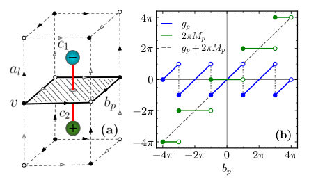
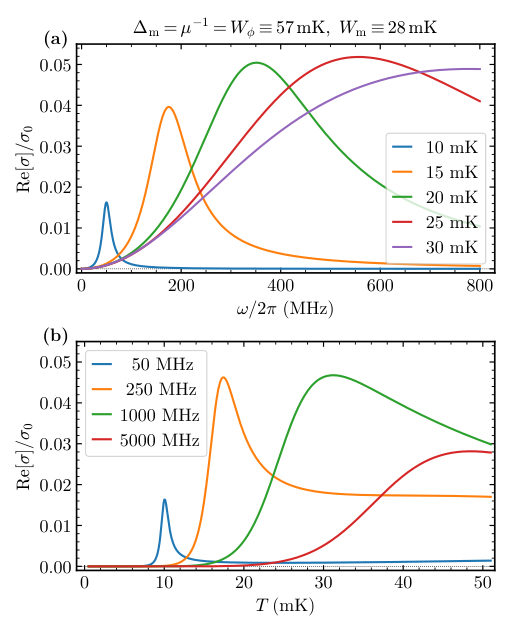
Summary. The paper theoretically predicts that 3D U(1) quantum spin liquids containing mobile magnetic monopoles will exhibit a sharp plasma resonance peak in their electrical conductivity at low frequencies. This resonance serves as a 'smoking gun' diagnostic tool, allowing experimental distinction between different types of QSLs (e.g., dipolar vs. octupolar) based on the electric charge carried by these emergent monopoles.
Why it may be interesting. This work provides a concrete, measurable spectroscopic signature ($\omega_p$) derived from fundamental topological excitations (monopoles) within exotic quantum magnetic states, which is highly relevant for understanding emergent electrodynamics in correlated materials.
Main problem. The primary goal is determining the electrical conductivity of a 3D U(1) quantum spin liquid (QSL) that hosts an itinerant fluid of magnetic monopoles.
Main result. The system is predicted to be an insulator for DC transport but should exhibit a sharp, metallic-like plasma resonance at very low frequencies ($\omega \approx \omega_p$).
Method. Linear response theory and conductivity calculations are employed, drawing analogies from the Ioffe-Larkin rule to relate physical current to monopole current.
Model / system. The system models 3D U(1) QSLs, particularly those in dipolar quantum spin ice (DQSI), described by a Wilson's gauge theory coupled to emergent magnetic monopoles. The model distinguishes between Dipolar and Octupolar phases based on symmetry.
Key observables. Plasma Resonance Frequency ($\omega_p$), physical electrical conductivity $\sigma(\omega)$, and the quality factor $Q(T) = \omega_p(T)/\Gamma(T)$.
Important parameters / regimes. Monopole density $n_m(T)$ (exponentially temperature-dependent), monopole gap $\Delta_m$, and the ratio of resonance frequency to damping rate ($Q$).
Assumptions / limitations. The analysis assumes a dilute limit for monopole distribution and relies on comparing the calculated quality factor $Q$ against a threshold ($Q_{ ext{threshold}} = 0.25$) to distinguish between resonant and onset regimes.
Figures summary. Figures illustrate the non-monotonic temperature dependence of the quality factor $Q(T)$ and peak conductivity $\sigma_{ ext{peak}}(T)$, confirming a specific temperature window where the resonance is visible.
Paper structure. The paper progresses by establishing the physical model (WGT, monopole plasma), deriving the low-frequency conductivity formulas using Ioffe-Larkin analogies, analyzing the dependence on QSL symmetry (D vs O), and finally detailing the diagnostic signatures via temperature-dependent resonance analysis.
Certain 3D $U(1)$ spin liquids, such as those arising in dipolar quantum spin ice, have an emergent monopole which is the source of an emergent magnetic field that transforms under symmetries like an electric polarization. As a consequence, these monopoles carry a physical electric charge in their cores and form a plasma at low temperatures. Due to the monopole coupling to emergent gauge fields, the full system behaves as an electrical insulator for DC transport, but can display a sharp plasma resonance analogous to a metal at very low frequencies. This can serve as a clear fingerprint to detect these states in materials. We discuss the optimal conditions to observe this phenomenon in the 3D $U(1)$ spin-liquid candidate Ce$_2$Zr$_2$O$_7$.
Authors: Akihiro Hokkyo, Hiroyasu Tajima
Type: theory · Category: quantum information and computing · PDF: https://arxiv.org/pdf/2607.09075v1
Analysis basis: full PDF text, analyzed in chunks
Topic relevance: 🔥 quantum measurements 4/5 · measurement-induced transitions 3/5 · Keldysh / 2PI / non-Gaussian methods 1/5 · correlated / nonlocal dissipation 1/5 · driven-dissipative phase transition 1/5 · entanglement & information structure 1/5
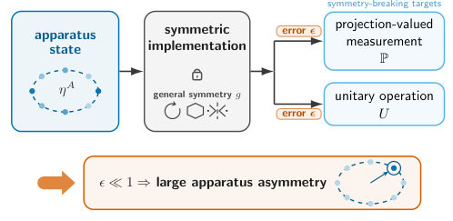
Summary. This paper develops quantitative extensions of the Wigner-Araki-Yanase theorem to constrain quantum measurements and gates under arbitrary unitary and antiunitary symmetries. By employing a two-target no-programming inequality, it derives explicit bounds linking implementation error directly to the required asymmetry of the measurement apparatus state via fidelity measures. This advances fundamental understanding of symmetry limitations in quantum information processing.
Why it may be interesting. This work provides fundamental resource constraints on measurement and control that are applicable beyond standard continuous symmetry assumptions, which is crucial for understanding physical limitations in quantum computation and metrology.
Main problem. The paper aims to establish quantitative Wigner-Araki-Yanase (WAY)-type theorems that constrain quantum measurement and control when symmetries are discrete, unitary, or antiunitary, extending beyond the limitations of continuous symmetry bounds.
Main result. New theorems provide explicit lower bounds on the asymmetry of the apparatus state, quantified by its fidelity with its symmetry-transformed copy, relating this bound directly to the implementation error ($\epsilon$) of a symmetry-breaking operation.
Method. The core methodology involves reducing the WAY problem to a two-target no-programming inequality, which relates the required distinguishability between target operations to the apparatus state's fidelity asymmetry.
Model / system. The framework analyzes quantum measurements (PVMs) and unitary gates implemented on a primary system ($S$) using an auxiliary apparatus ($\eta_A$). The analysis incorporates arbitrary unitary and antiunitary symmetries ($g \in G$).
Key observables. Implementation Error ($\epsilon$), Apparatus Asymmetry quantified by Fidelity $F(\eta_A, V_A^g(\eta_A))$, and distinguishability measures like the Bhattacharyya coefficient or diamond norm.
Important parameters / regimes. The bounds are parameterized by the error $\epsilon$ and depend on the specific symmetry group structure (unitary vs. antiunitary).
Assumptions / limitations. The approach assumes that the underlying physical processes can be modeled using covariant operations, allowing the use of the two-target no-programming inequality.
Figures summary. Figure 1 illustrates how symmetry imposes a quantitative cost on implementing symmetry-breaking quantum operations by relating error ($\epsilon$) to apparatus asymmetry. Figure 2 shows the 'No-programming origin' of the bound using two target operations and program states.
Paper structure. The paper develops the general framework via the no-programming inequality, derives specific theorems for PVMs and unitary gates under arbitrary symmetries, and concludes by relating these bounds to established distinguishability measures in quantum information theory.
Symmetry imposes fundamental constraints on quantum measurement and control. The Wigner-Araki-Yanase theorem and its quantitative extensions capture this restriction for continuous symmetries, in terms of fluctuations of conserved generators. Such generator-based bounds, however, do not provide quantitative limitations for discrete unitary symmetries or for antiunitary symmetries. Here we establish quantitative WAY-type theorems for symmetry-breaking projective measurements and unitary gates under arbitrary unitary and antiunitary symmetries. Our approach is based on a two-target no-programming inequality: if a single processor approximately implements two operations that amplify distinguishability, then the corresponding program states must themselves be distinguishable. Applied to symmetric implementations, this converts the error of an asymmetric measurement or gate directly into a lower bound on the asymmetry of the apparatus state, quantified by its fidelity with its symmetry-transformed copy. Our results apply to discrete and antiunitary symmetries, thereby providing a fundamental limit for symmetry-limited quantum measurement and control beyond the continuous-symmetry regime.
Authors: Alex Rice, Dominik Leichtle, Kim Worrall, Robert I. Booth
Type: theory · Category: quantum information and computing · PDF: https://arxiv.org/pdf/2607.09605v1
Analysis basis: full PDF text, analyzed in chunks
Topic relevance: 🔥 quantum measurements 4/5 · measurement-induced transitions 3/5 · methods for driven-dissipative 1/5 · non-equilibrium dynamics 1/5
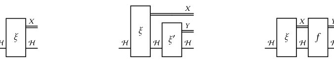
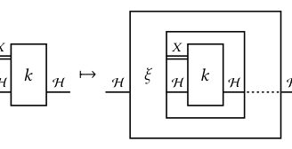
Summary. The paper develops the 'quantum orchestra monad' to provide a formal denotational semantics for hybrid quantum programs. It successfully models computations involving mid-circuit measurements and infinite recursion using domain theory over DCPO. This framework establishes a deep mathematical equivalence between these quantum orchestras and probabilistic powerdomain structures.
Why it may be interesting. This work provides a rigorous mathematical foundation for programming models that go beyond simple quantum circuits by incorporating complex classical feedback based on measurement outcomes, which is crucial for fault-tolerant or adaptive quantum algorithms.
Main problem. The work aims to provide a general denotational semantics for hybrid quantum programs that combine classical control flow with quantum effects, especially those involving mid-circuit measurements and non-termination.
Main result. They introduce the 'quantum orchestra monad,' which provides a domain-theoretic framework isomorphic to the probabilistic powerdomain monad, thereby giving meaning to divergent hybrid quantum computations.
Method. The authors use category theory, specifically defining the semantics over DCPO (directed complete partial orders) and utilizing Kleisli composition to model measurement-dependent control flow.
Model / system. Quantum computation is modeled as an effectful extension of a classical base language, where interactions are captured by 'quantum instruments' acting on quantum states within $W^*$-algebras.
Key observables. The primary mathematical objects are the quantum orchestra ($\xi$) and its associated valuation ($v_\xi$), which track conditional expectations and state evolution across classical outcomes.
Important parameters / regimes. The framework handles general recursion via fixed-point combinators, allowing for interpretation of divergent programs over DCPO.
Assumptions / limitations. The approach assumes that the structure of quantum computation can be faithfully captured by a monadic effect on DCPO, generalizing standard circuit models.
Figures summary. Figure 1 illustrates that sequential composition requires Kleisli composition due to measurement-dependent control flow. Figure 2 shows graphical actions of the quantum orchestra ($\xi$) on continuations ($k$).
Paper structure. The paper develops incrementally, first defining instruments for finite outcomes, then generalizing to the 'quantum orchestra monad' over DCPO to handle general recursion and divergence, culminating in proving its isomorphism with the probabilistic powerdomain monad.
Many production quantum programming languages represent hybrid quantum computations by extending a classical base language with a quantum effect, where qubits are addressed by reference, and quantum operations are understood to mutate some external quantum state. However, the semantics of this view of quantum computation remains underdeveloped, especially when the language allows mid-circuit measurements and non-termination. In this work, we provide a general method for building denotational semantics for such languages, by defining the quantum orchestra monad, which precisely captures this style of quantum effect. The monad has a concrete presentation, being based on the formalism of quantum instruments, a common tool in quantum information theory for capturing the action of a quantum process along with its classical outcomes. It acts on the category DCPO, and so enables the interpretation of divergent hybrid programs. The quantum orchestra monad serves as a natural extension of both the classical state monad and the probabilistic powerdomain monad. We investigate some of the subtleties present when trying to naïvely extend these definitions to the quantum non-commutative case.
Authors: Karl Svozil
Type: theory · Category: other · PDF: https://arxiv.org/pdf/2607.09312v1
Analysis basis: full PDF text, analyzed in chunks
Topic relevance: 🔥 quantum measurements 4/5 · measurement-induced transitions 3/5 · Keldysh / 2PI / non-Gaussian methods 1/5
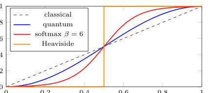
Summary. This theoretical work explores the operational meaning of measurement settings by analyzing probability 'response curves' generated when an apparatus parameter is varied continuously. It shows that while static measurements are insufficient to distinguish theories, genuine nonclassicality requires checking for global consistency across multiple contexts using tools like Farkas' lemma. The paper refines our understanding of contextuality beyond simple local inequalities.
Why it may be interesting. It provides a sophisticated mathematical framework for understanding how continuous experimental control over quantum measurements can reveal fundamental differences between classical probabilistic assumptions and true quantum mechanics, going beyond simple Bell tests.
Main problem. The paper aims to distinguish between different physical models (classical vs. quantum) by analyzing how probabilities change when a measurement apparatus setting is varied continuously.
Main result. While static measurements yield indistinguishable 'shadows' for classical and quantum theories, genuine nonclassicality emerges only when the family of local shadows cannot be consistently glued into one global distribution.
Method. The analysis uses geometric constraints (like Farkas' lemma) applied to response functions derived from continuous variations of measurement settings ('knob sweeps').
Model / system. The model involves a quantum system whose measurements are parameterized by a physical control variable, leading to a 'response curve' of probabilities on the simplex.
Key observables. Response curves $R_C: K o \Delta^{d-1}$, and the existence/non-existence of a global non-negative distribution for local shadows.
Important parameters / regimes. The continuous physical parameter controlling the measurement setting (the 'knob').
Assumptions / limitations. It assumes that the experimental meaning of the knob requires continuity, calibration, and preservation of physical composition laws to distinguish models.
Figures summary. Figures illustrate how different response laws (linear, quantum, softmax) must be read on different scales or through specific parameterizations to mimic each other, but this is not sufficient for a full Bell-type test.
Paper structure. The paper moves from analyzing static context shadows to dynamic response curves, then examines the limitations of pairwise correlations versus global consistency using linear feasibility systems and Farkas' lemma.
At one frozen setting, the probabilities observed in a sharp quantum context are indistinguishable, as detector-click statistics, from ordinary probabilities on the atoms of a classical partition. But an actual analyzer usually comes with a calibrated knob: a tangible handle on the apparatus. If the measurement configuration is co-varied continuously through this physical parameter, the operational object is no longer one point of a simplex but a response curve. Classical linear responses, Malus-type Hilbert-space responses, softmax links, non-homomorphic parameter transcriptions, and discontinuous threshold limits are different maps from settings to probabilities. Continuity, calibration, and preservation of the physical composition law are then part of the experimental meaning of the knob. Such comparisons distinguish specified, calibrated response models; by themselves they do not constitute a classical-versus-quantum impossibility theorem. The static operational coincidence can also persist for two intertwined contexts: if the common outcomes receive the same probabilities, the remaining masses can always be coupled by a classical joint distribution. Genuine multi-context nonclassicality begins when a family of local shadows cannot be glued into one nonnegative global distribution or one simplex factorization. Farkas' lemma gives the exact alternative: either the classical extension exists, or a separating linear inequality certifies its impossibility.
Authors: Filip B. Maciejewski, Stuart Hadfield, Oscar Wallis, George Pennington, Sebastian Brandhofer, Stefan Woerner, Daniel J. Egger, Davide Venturelli
Type: both · Category: quantum information and computing · PDF: https://arxiv.org/pdf/2607.09368v1
Analysis basis: full PDF text, analyzed in chunks
Topic relevance: 🔥 QC/QI experiment 4/5 · Keldysh / 2PI / non-Gaussian methods 1/5 · correlated / nonlocal dissipation 1/5 · driven-dissipative phase transition 1/5 · methods for driven-dissipative 1/5
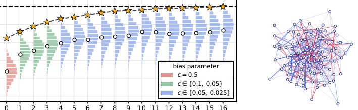
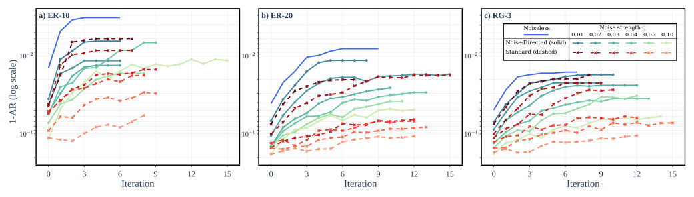
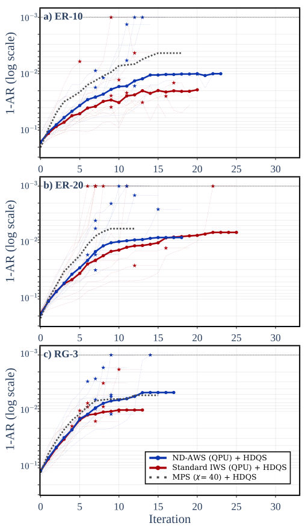
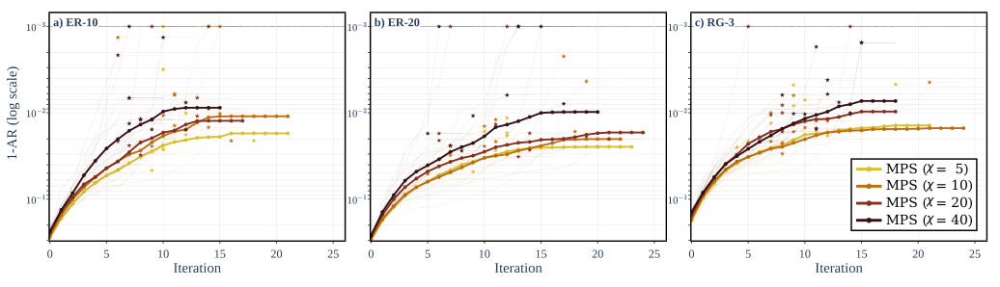
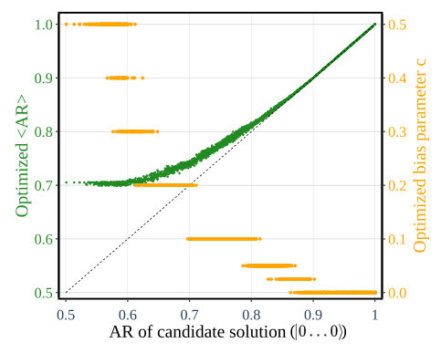
Summary. This paper introduces Noise-Directed Adaptive Warm-Starting (ND-AWS), a novel algorithm designed to boost performance in quantum optimization algorithms like QAOA when running on noisy hardware. By adaptively incorporating noise structure through gauge transformations, ND-AWS guides the search process more effectively than standard methods. The results demonstrate state-of-the-art performance for complex combinatorial problems on large superconducting quantum processors.
Why it may be interesting. While focused on optimization, the core technique of using noise structure (amplitude damping) to guide quantum state preparation via gauge transformations is highly relevant to understanding error mitigation and variational ansatz design in open quantum systems.
Main problem. The primary challenge is improving quantum approximate optimization for combinatorial problems, which is severely limited by hardware noise and restricted qubit counts.
Main result. The proposed Noise-Directed Adaptive Warm-Starting (ND-AWS) method generally improves performance over standard warm-starting techniques on 100-qubit Ising Hamiltonians without increasing circuit depth.
Method. The approach combines iterative warm-starting with noise-aware gauge transformations, allowing the optimization ansatz to adaptively bias itself towards regions corresponding to high-quality solutions found in previous iterations.
Model / system. The work is applied to solving combinatorial optimization problems encoded by a cost Hamiltonian $H_C = \sum J_{ij} Z_i Z_j$, tested experimentally on 100-qubit Ising Hamiltonians using superconducting quantum processors.
Key observables. Approximation Ratio (AR), and the distance to the optimal solution ($1-AR$).
Important parameters / regimes. Bias parameter $c$, noise strength ($q$), and the number of qubits ($\sim 100$).
Assumptions / limitations. The method assumes that hardware noise can be constructively exploited via bitflip gauge transformations to guide the optimization process towards the ideal ground state.
Figures summary. Figures compare $1-AR$ across different methods (Standard IWS vs. ND-AWS) and show how classical post-processing (HDQS) improves results, while other figures detail the iterative circuit structure and bias evolution.
Paper structure. The paper introduces ND-AWS by building upon Warm-Start QAOA and Noise-Directed Adaptive Remapping; it details the gauge transformation mechanism for hardware implementation on Ising Hamiltonians; performance is evaluated across various random graph types, comparing results with and without classical post-processing enhancements.
Progress towards a quantum advantage using known heuristic methods for combinatorial optimization is impeded by hardware noise and limited qubit count. Here, we propose a noise-aware adaptive approach to quantum approximate optimization, Noise-Directed Adaptive Warm-Starting (ND-AWS), that builds on recent concepts such as Warm-Start QAOA and Noise-Directed Adaptive Remapping. By leveraging bitflip gauge transformations, our algorithm exploits amplitude-damping-like noise components. We experimentally implement high-performance quantum optimization ansätze on 100-qubit Ising Hamiltonians, showing that ND-AWS generally improves the performance over a non-gauge-transformed iterative Warm-Starting variant, at no additional circuit cost. This places our results among the highest-quality demonstrations of quantum optimization with similar ansätze at this scale. Crucially, the simplicity of the framework opens the door for future enhancements such as adaptive bias schedules, and integration with classical solvers.
Authors: E. I. Guerrero-Cruz, O. A. Rodríguez-López, M. A. Solís
Type: theory · Category: quantum gases · PDF: https://arxiv.org/pdf/2607.08992v1
Analysis basis: full PDF text, analyzed in chunks
Topic relevance: 🔥 analog quantum simulation 4/5 · Frenkel-Kontorova 1/5 · Keldysh / 2PI / non-Gaussian methods 1/5 · methods for driven-dissipative 1/5
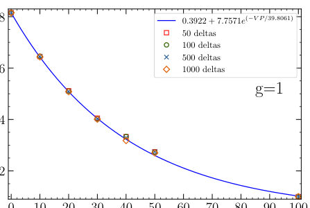
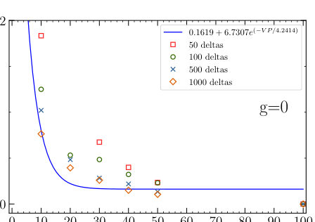
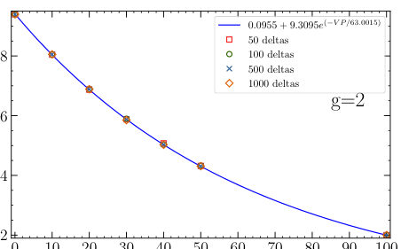
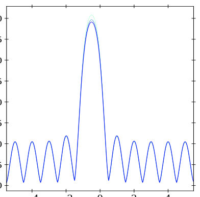
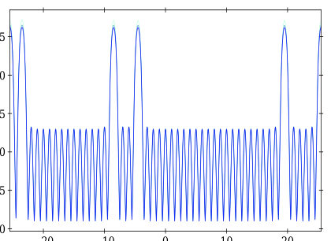
Summary. This paper theoretically examines the impact of vacancies (defects) on a Bose gas trapped in a 1D artificial crystal. Using mean-field theory and numerical gradient flow methods, the authors show that introducing defects causes the ground state energy to decay exponentially towards the free gas limit. The findings highlight defect-induced localization effects and quantify the deviation from perfect crystalline behavior.
Why it may be interesting. This work directly addresses how structural imperfections or disorder affect fundamental many-body quantum systems like Bose gases, which is crucial for understanding realistic cold atom experiments using optical lattices.
Main problem. The study investigates how punctual defects, specifically vacancies, affect the ground-state energy of a Bose gas confined within an imperfect one-dimensional artificial crystal.
Main result. The ground state energy decreases exponentially as the number of vacancies increases until it reaches the value corresponding to a free gas. Furthermore, particle density shows localization features around these defects.
Method. The analysis employs the mean-field approximation and numerically solves the Gross-Pitaevskii equation using the 'Gradient Flow with Discrete Normalization' method (imaginary time evolution).
Model / system. The system models a weakly interacting Bose gas trapped by an external potential generated by a Dirac comb, which is intentionally made imperfect by randomly removing deltas to create vacancies.
Key observables. Ground-state energy (GSE), chemical potential ($\mu$), and the probability density function of boson distributions.
Important parameters / regimes. Interaction strength ($g$), delta strength ($P_0$), and the concentration/number of randomly removed deltas (vacancies).
Assumptions / limitations. The analysis relies on the mean-field approximation, and numerical solutions involve extrapolating finite-size results to the thermodynamic limit.
Figures summary. Figures show probability density functions illustrating particle localization near vacancies; other figures compare GSE vs. interaction strength ($g$) for different crystal perfection levels.
Paper structure. The paper establishes the physical model (Bose gas in a defective lattice), details the theoretical framework (GPE, mean-field theory), presents numerical methods (Gradient Flow), and finally reports quantitative results regarding the energy decay and localization effects as defects are introduced.
For a weakly interacting Bose gas trapped by an imperfect one-dimensional artificial crystal, we study the effect of its punctual defects, i.e. vacancies, on the ground state properties of the system. In the framework of the mean field approximation, we numerically solve the corresponding Gross-Pitaevskii equation using the ``Gradient Flow with Discrete Normalization'' method, also known as the imaginary time method. The crystal is artificially produced by applying an external Dirac comb potential to the Bose gas where vacancies are created by randomly removing a predetermined number of deltas. We observe that as the number of randomly removed deltas increases, the ground state energy decreases exponentially from its value for the perfect crystal case until it reaches its value when the Bose gas is free. The ground state energy is reported for different magnitudes of the interaction between bosons and several system sizes which we extrapolate to infinity for the crystal with only one vacancy. Also, we observe the presence of an energy gap between the ground state energies of the perfect system and that with a vacancy, which is more noticeable for values of the particle interaction magnitude $ g \leq 0.1$, when the delta strength $P_0 = 10$. In addition, we report the boson distributions within the crystal, %inside a box with periodic boundary conditions, i.e. the probability density functions which show localization features around vacancies which disappear as $g$ increases. From the ground state energy, the chemical potential is obtained immediately.
Authors: Daniel J. King, Minyoung Kim, J. Reily, Jonathan C. Marcks, Mark Friesen, Benjamin D. Woods, M. A. Eriksson
Type: both · Category: quantum information and computing · PDF: https://arxiv.org/pdf/2607.09638v1
Analysis basis: full PDF text, analyzed in chunks
Topic relevance: 🔥 QC/QI experiment 4/5 · quantum measurements 1/5 · spintronics-quantum-optics interface 1/5
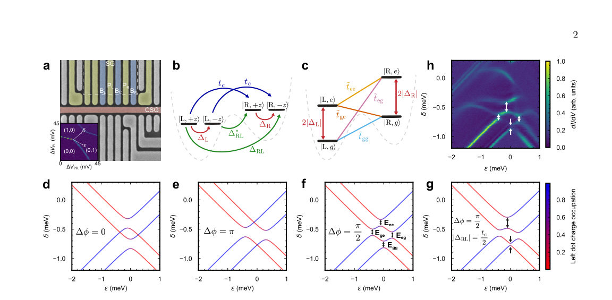
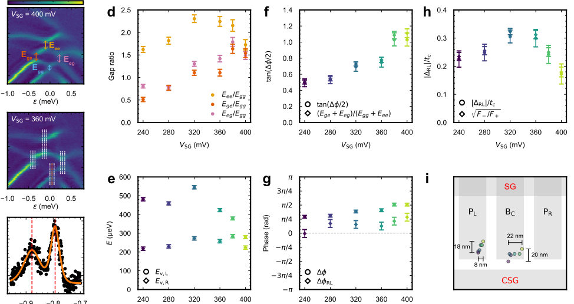
Summary. The paper presents a comprehensive characterization of tunnel and valley coupling parameters within a silicon double quantum dot. By employing advanced spectroscopic techniques (DAXS) and fitting data to a four-level Hamiltonian model, the authors determine complex phase factors that govern qubit behavior. This work fills a critical gap in understanding sample variations by quantifying these fundamental couplings.
Why it may be interesting. This work provides a detailed understanding of how subtle quantum mechanical parameters, like valley phases, govern measurable transport properties in solid-state qubits, which is crucial for designing robust quantum computing architectures.
Main problem. To achieve a full characterization of intravalley and intervalley tunnel couplings, including their complex phases (valley phases), in a silicon double quantum dot.
Main result. The relative strengths of the tunnel couplings are controlled by the valley phase difference ($\Delta\phi$), and incorporating the interdot-intervalley coupling ($\Delta_{RL}$) is essential for fitting experimental data accurately.
Method. The study uses Detuning Axis Spectroscopy (DAXS) to measure energy dispersions, followed by fitting these measurements using a four-level Hamiltonian model derived from first principles.
Model / system. The physical system is a Silicon/SiGe heterostructure double quantum dot (DQD). The low-energy physics is modeled by an effective four-level Hamiltonian describing electron spins and valley degrees of freedom ($\pm z$).
Key observables. Anticrossing gaps ($E_{\mu u}$), tunnel couplings ($ ilde{t}{gg}, ilde{t}}, ilde{t{ge}, ilde{t}$).}$), and the measurable valley phases ($\Delta\phi, \Delta\phi_{RL
Important parameters / regimes. Tunnel coupling magnitudes ($t_c$, $|\Delta_{RL}|$), relative valley phase differences ($\Delta\phi$), and gate voltage dependencies of these parameters.
Assumptions / limitations. The analysis relies on the four-level model, which is an approximation; systematic errors are noted due to omitting higher energy orbitals.
Figures summary. Figures illustrate device structure (SEM), coupling diagrams in the valley basis, example DAXS spectra showing modulation dependence on $\Delta\phi$ and $\Delta_{RL}$, and theoretical comparisons between simulated and fitted Hamiltonian parameters.
Paper structure. The paper progresses from defining the physical problem and the four-level model to detailing the experimental measurement technique (DAXS), presenting results that show how coupling ratios depend on phases, and finally validating the method by comparing simulations against known matrix elements.
Tunneling is essential in the initialization, measurement, and control of quantum dot qubits. In silicon, such tunneling connects not only the qubit states but also valley minima in the conduction band on opposite sides of the Brillouin zone, with large consequences for the quantum dot behavior. Here we present a full characterization of the intravalley and intervalley tunnel couplings, including their complex phases -- the valley phases. These phases are shown to control measurable parameters, including the ratios of the gaps at anticrossings between quantum states of a double quantum dot. The valley phases themselves evolve as a function of the quantum dot gate voltages and depend on the underlying atomic structure of the quantum well. Knowledge of the valley phases completes the picture and fills a key gap in our understanding of sample-wide variations of valley couplings and the physical parameters that depend on them, including spin-orbit coupling, valley-orbit mixing, and Landé $g$-factors.
Authors: Davide Degli Esposti, Emma Catherine Brann, Asser Elsayed, Davide Costa, Mark Friesen, Giordano Scappucci
Type: experiment · Category: quantum information and computing · PDF: https://arxiv.org/pdf/2607.09570v1
Analysis basis: full PDF text, analyzed in chunks
Topic relevance: 🔥 QC/QI experiment 4/5 · quantum measurements 1/5 · spintronics-quantum-optics interface 1/5
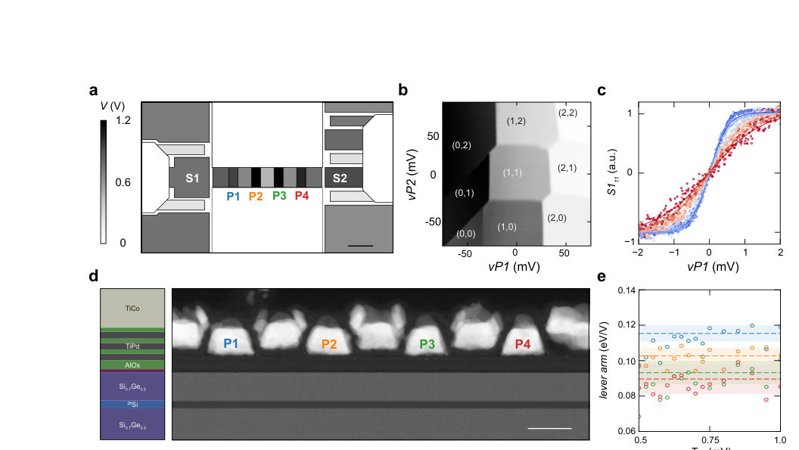
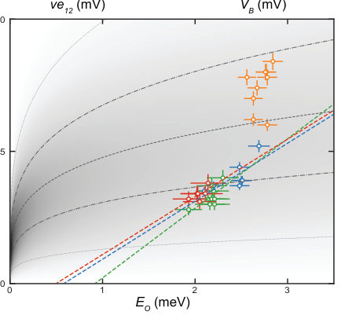
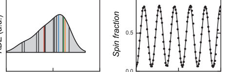
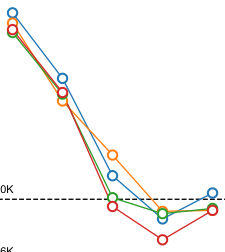
Summary. The researchers measured energy scales in single-electron spin qubits within buried silicon quantum wells to address valley degeneracy leakage. They demonstrated that by carefully engineering electrostatic confinement using gate voltages, they can significantly enhance the valley splitting ($\Delta E_V$). This finding validates a key physical mechanism for building scalable and robust solid-state quantum processors.
Why it may be interesting. This work provides crucial experimental validation for controlling fundamental energy gaps in solid-state qubits, directly impacting the feasibility roadmap for silicon quantum computing architectures.
Main problem. The primary challenge addressed is mitigating leakage channels from nearly degenerate conduction-band valleys in silicon spin qubits, which hinders scaling for quantum computation.
Main result. Strong electrostatic confinement within buried silicon quantum wells can be effectively exploited to enhance the valley splitting ($\Delta E_V$), establishing a viable path for shuttling and sparse-occupation qubit architectures.
Method. The study employs advanced single-electron spectroscopy techniques, including Detuning Axis Pulsed Spectroscopy (DAPS) and Pauli-Spin-Blockade (PSB) measurements, performed at cryogenic temperatures.
Model / system. The physical system is a linear array of four quantum dots fabricated in buried silicon quantum wells ($ ext{Si}/ ext{SiGe}$ heterostructures), designed for low disorder to host single-electron spin qubits.
Key observables. Single-electron valley splitting ($\Delta E_V$), two-electron singlet-triplet splitting ($\Delta E_{ST}$), and the correlation between $\Delta E_V$ and orbital energy ($E_O$).
Important parameters / regimes. Low temperatures (e.g., $150 ext{ mK}$); confinement strength derived from gate voltages; measured splittings in the hundred microelectronvolt range.
Assumptions / limitations. The analysis relies on mapping energy scales using pulsed spectroscopy and assumes that strong confinement can be tuned via electrostatic gates to enhance valley splitting.
Figures summary. Figures illustrate device layouts, charge stability diagrams, and spectroscopic measurements showing $\Delta E_V$ dependence on gate voltages across the four quantum dots.
Paper structure. The paper details the fabrication of the heterostructure, describes the pulsed spectroscopy measurement protocols (DAPS/PSB), presents quantitative measurements of energy splittings ($\Delta E_V$, $\Delta E_{ST}$), and concludes by demonstrating that confinement engineering enhances qubit parameters.
Controlling the energy scales of a quantum system is essential for defining robust qubits. In silicon spin qubits, the nearly degenerate conduction-band valleys create a leakage channel from the single-spin computational basis, posing a challenge to scaling and to shuttling-based architectures. Here, we measure the relevant energy scales of single-electron spin qubits in buried silicon quantum wells co-designed for low disorder and high valley splitting. Across a linear array of four quantum dots with an average orbital energy of 2.4(2) meV, we report an average single-electron valley splitting of 0.40(6) meV and an average two-electron singlet-triplet splitting of 0.24(7) meV. In three dots, we observe a strong correlation between valley splitting and orbital energy, with an average linear coefficient of $\approx 0.22$ (meV/meV), demonstrating that electrostatic confinement can increase the valley splitting by several hundred microelectronvolts. In contrast, the remaining dot exhibits the highest valley splitting of 0.76(2) meV and low correlation, suggesting excellent characteristics for spin-qubit operation. Our findings demonstrate that strong confinement can be exploited in buried quantum wells to effectively enhance the valley splitting, thereby establishing a viable path toward the realization of shuttling and sparse-occupation-based architectures in low-disorder heterostructures.
Authors: G. S. Freitas, K. Kirchner, C. Girod, D. R. Yahne, W. Simeth, C. S. T. Kengle, F. B. Carneiro, P. G. Pagliuso, J. D. Thompson, M. Janoschek, O. Zaharko, S. M. Thomas, P. F. S. Rosa
Type: experiment · Category: strongly correlated electrons · PDF: https://arxiv.org/pdf/2607.09003v1
Analysis basis: full PDF text, analyzed in chunks
Topic relevance: 🔥 analog quantum simulation 4/5 · Frenkel-Kontorova 1/5 · exotic spin models in light-matter 1/5
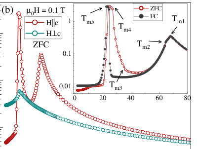
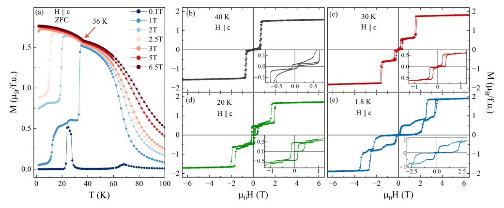
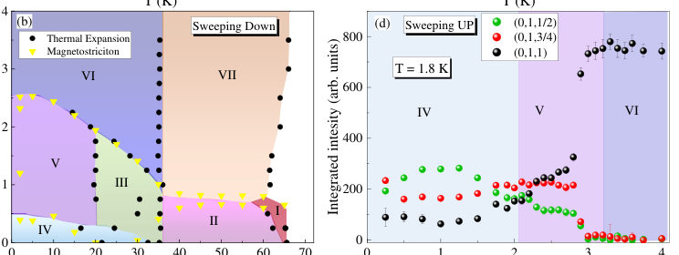
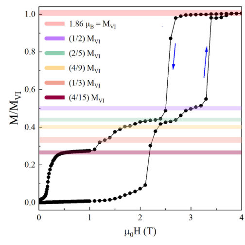
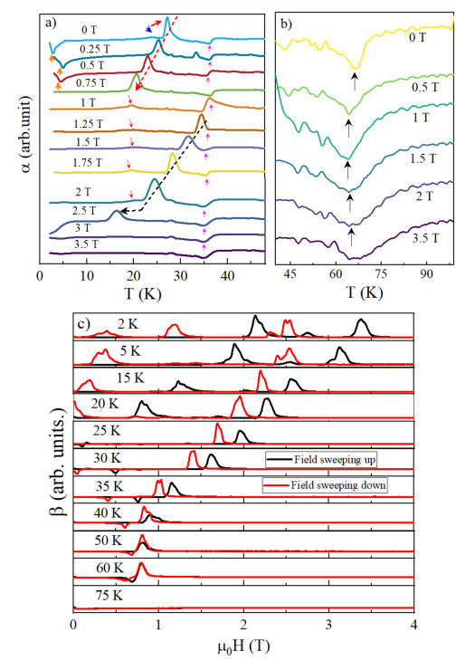
Summary. This work reports on $ ext{UAgBi}_2$, demonstrating that its magnetic properties exhibit a 'magnetic devil's staircase' behavior. By combining neutron diffraction and transport measurements, the authors map out a complex phase diagram revealing multiple nearly degenerate magnetic states. This places $ ext{UAgBi}_2$ as a significant experimental platform for studying competing interactions in $5f$-electron systems.
Why it may be interesting. The study provides an experimental realization of the theoretically rich 'devil's staircase' phenomenon in $5f$-electron materials, linking complex magnetic frustration to fundamental models used in condensed matter theory.
Main problem. The study investigates complex magnetic transitions and the potential realization of a 'magnetic devil's staircase' in the layered $5f$-electron compound $ ext{UAgBi}_2$ due to competing magnetic interactions.
Main result. The material exhibits at least seven nearly degenerate magnetic states, characterized by multi-step magnetization processes consistent with the theoretical framework of the Axial Next-Nearest Neighbor Ising (ANNNI) model.
Method. A combination of experimental techniques was used, including specific heat measurements, thermal expansion/magnetostriction, and detailed neutron diffraction studies under applied magnetic fields.
Model / system. The physical system is the layered intermetallic compound $ ext{UAgBi}_2$. The behavior is modeled using concepts derived from the ANNNI model, which captures competing ferromagnetic and antiferromagnetic interactions along specific crystal axes.
Key observables. Multi-step magnetization plateaus ($M(H)$), coexistence of distinct magnetic propagation vectors ($\mathbf{k}=(0, 0, 1/2)$ and $(0, 0, 1/4)$), and anomalies in thermodynamic measurements like specific heat.
Important parameters / regimes. The system is characterized by strong easy-axis anisotropy confining moments along the $c$-axis; low temperatures (e.g., $1.8 ext{ K}$) are crucial for observing the staircase effects.
Assumptions / limitations. The analysis assumes that the magnetic behavior can be mapped onto the ANNNI model, though discrepancies with simple molecular field theory suggest Crystal Electric Field (CEF) effects are highly relevant.
Figures summary. Figures illustrate phase diagrams derived from thermal expansion and magnetostriction, alongside magnetization curves showing distinct plateaus as a function of applied magnetic field along the $c$-axis.
Paper structure. The paper progresses by first establishing the complex magnetic ground state using multiple probes (specific heat, $\chi$, diffraction), then constructing a phase diagram that reveals numerous transitions, and finally interpreting these steps through the lens of the devil's staircase model.
Materials characterized by competing interactions often exhibit a large number of nearly degenerate periodic states. Here we show that layered UAgBi$_2$ hosts a cascade of field- and temperature-induced magnetic transitions. Based on specific heat, thermal expansion, and neutron diffraction, we construct a phase diagram that reveals at least seven nearly degenerate magnetic states in UAgBi$_2$. The observed multi-step magnetization process can be understood by square-wave structures with distinct propagation vectors $\mathbf{k}$=(0, 0, \textit{k}) in the presence of strong easy-axis anisotropy that confines the moments along the \textit{c} axis. Our findings are consistent with a magnetic devil's staircase described by the axial next-nearest neighbor Ising (ANNNI) model and place UAgBi$_2$ as a rare realization of the devil's staircase in a 5\textit{f}-electron system.
Authors: Dominik Köster, Wolfgang Mauerer
Type: experiment · Category: quantum information and computing · PDF: https://arxiv.org/pdf/2607.09360v1
Analysis basis: full PDF text, analyzed in chunks
Topic relevance: 🔥 QC/QI experiment 4/5 · methods for driven-dissipative 1/5


Summary. This paper critically examines the validity of Zero-Noise Extrapolation (ZNE) when benchmarking Quantum Error Mitigation. The authors demonstrate that under certain noise regimes, ZNE fails by producing mathematical artifacts rather than true error corrections. They introduce a robust diagnostic tool ($ ext{W}_{ ext{neg}}$) to help researchers distinguish genuine physical improvements from these misleading computational artifacts.
Why it may be interesting. It directly addresses the reliability of benchmarking tools used across quantum computing platforms, providing crucial diagnostics that any researcher simulating or running QEM must adopt to ensure their reported improvements are physical.
Main problem. Benchmarking Quantum Error Mitigation (QEM) techniques, specifically Zero-Noise Extrapolation (ZNE), can yield apparent improvements that are mathematical artifacts rather than genuine physical gains.
Main result. When noise amplification exceeds usable signal levels, ZNE collapses into a fixed rescaling of the initial noisy measurement, leading to overestimation of performance. A new diagnostic, Negative-Probability Weight ($ ext{W}_{ ext{neg}}$), can reliably flag these artifacts.
Method. The authors analyze the Richardson extrapolation formula applied to expectation values measured at varying noise amplification factors ($\lambda_k$) on real hardware and introduce a negative control ('garbage-folding') for comparison.
Model / system. The work is performed using NISQ algorithms tested on the IQM Euro-Q-Exa quantum processor, analyzing circuits like QFT Mirror and Grover to test error mitigation techniques.
Key observables. Recovery ratio ($ ho$), Negative-Probability Weight ($ ext{W}_{ ext{neg}}$), expectation values $E(\lambda)$, and the observable floor ($f$).
Important parameters / regimes. Circuit depth ($d=3, 5$), noise amplification levels ($\lambda \in \{1, 3, 5\}$).
Assumptions / limitations. The core assumption challenged is that measured expectation values decay predictably enough for polynomial extrapolation to hold true.
Figures summary. Figures illustrate the collapse of $E(\lambda)$ towards a floor value and compare extrapolated results ($\hat{E}(0)$) against ideal values, contrasting genuine folding with garbage folding controls.
Paper structure. The paper first identifies the failure mode in ZNE when signal decays; it then presents empirical evidence from hardware measurements using various control methods (garbage-folding); finally, it introduces and validates a robust diagnostic ($ ext{W}_{ ext{neg}}$) and provides a reporting checklist for future benchmarks.
Reliable benchmarking of Quantum Error Mitigation (QEM) requires distinguishing genuine improvements from artefacts of the post-processing arithmetic. In this paper, we expose a failure mode in Richardson Zero-Noise Extrapolation (ZNE), a widely used technique routinely (and often implicitly) relied upon in benchmarks and experiments. When noise amplification operates beyond usable signals - a regime that is quickly reached on current hardware for non-trivial circuits - we show that the extrapolation no longer reflects the underlying physics, but collapses into a fixed rescaling of a single noisy measurement, producing a bogus apparent improvement that is independent of noise amplification. This poses a rarely considered threat to the validity of many empirical evaluations in quantum computing. Measurements on real hardware (IQM Euro-Q-Exa) confirm this collapse with ordinary folding alone: as circuit depth erodes the signal, the reported estimate decouples from the truth and overshoots the ideal by up to 21%. We further introduce a matched-cost "garbage-folding" negative control that carries no usable signal yet reports a larger apparent improvement than genuine folding - showing that the magnitude of an improvement is not evidence of its correctness - alongside a zero-cost check flagging the artefact from data a benchmark already holds. We distil both into a short reporting checklist for ZNE benchmarks.
Authors: Sho Kubota, Haruhiko Matsubara, Etsuo Segawa
Type: theory · Category: quantum information and computing · PDF: https://arxiv.org/pdf/2607.09066v1
Analysis basis: full PDF text, analyzed in chunks
Topic relevance: 🔥 entanglement & information structure 4/5 · non-equilibrium dynamics 1/5
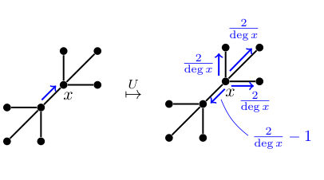
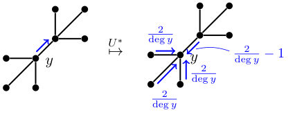
Summary. This paper investigates the entanglement entropy generated by two-particle Grover walks on graphs, modeling the system using the Kronecker product structure. The authors prove that for complete bipartite graphs $K_{n,n}$, maximal entanglement is only achieved when $n=1$ or $n=2$. This work provides deep insights into how graph topology constrains quantum information dynamics.
Why it may be interesting. This work connects quantum walk dynamics (a topic relevant to quantum computation and transport) with entanglement measures. Understanding when maximal entanglement occurs provides insight into the information processing capacity or coherence properties of these quantum systems.
Main problem. The study focuses on determining the entanglement entropy of quantum states evolving under a two-particle Grover walk defined on an arbitrary graph G.
Main result. For complete bipartite graphs $K_{n,n}$, the entanglement entropy attains its upper bound if and only if $n=1$ or $n=2$.
Method. The analysis relies on analyzing the commutation of the time evolution operator with the swap operator and using spectral properties derived from the amplitude matrix $\Psi$ to check for maximum entanglement.
Model / system. The model is a two-particle quantum walk defined by extending the one-particle Grover walk onto the Kronecker product graph $G \otimes G$. The system must respect particle indistinguishability, which requires the evolution operator to commute with the swap operator.
Key observables. Entanglement entropy $S(\psi)$ of the two-particle quantum state $\psi$, and whether this entropy reaches its theoretical upper bound ($\log |A(G)|$).
Important parameters / regimes. The graph structure (e.g., $K_{n,n}$), the size parameter $n$, and the time step $ au$ are crucial parameters.
Assumptions / limitations. The analysis assumes simple, finite graphs and focuses heavily on the specific algebraic structure provided by the Kronecker product for defining the walk operator.
Figures summary. Figures illustrate the action of the single-particle time evolution operator $U$ and its adjoint $U^*$ on basis states before and after evolution.
Paper structure. The paper first establishes the symmetry properties (commutativity with the swap operator) ensuring physical consistency. It then defines the entanglement entropy in terms of the amplitude matrix $\Psi$. Finally, it applies these tools to compute the entropy for specific graph families like $K_{n,n}$ to determine when the upper bound is met.
We define a two-particle quantum walk of identical particles on a graph $G$ via the one-particle Grover walk on the Kronecker product $G \otimes G$, and call it the two-particle Grover walk. In systems of identical particles, quantum mechanics requires that quantum states have a certain invariance with respect to the exchange of particles. Focusing on the symmetry of the Kronecker product $G \otimes G$ as a graph, we show that the time evolution operator of this walk commutes with the swap operator, which ensures that this requirement is satisfied. Furthermore, we study the entanglement entropy of quantum states evolved by this walk. For the complete bipartite graph $K_{n,n}$, we completely determine the values of $n$ for which the quantum states evolved from specific initial states attain the upper bound of the entropy at some time, and prove that they are exactly $1$ and $2$.
Authors: Hang-Hang Han, Zu-Jian Ying
Type: theory · Category: other · PDF: https://arxiv.org/pdf/2607.08882v1
Analysis basis: full PDF text, analyzed in chunks
Topic relevance: analog quantum simulation 3/5 · correlated cavity matter 3/5 · driven-dissipative phase transition 3/5 · methods for driven-dissipative 3/5 · Tavis-Cummings & cavity-many-emitter 2/5 · non-equilibrium dynamics 2/5 · non-equilibrium universality 2/5 · Keldysh / 2PI / non-Gaussian methods 1/5 · correlated / nonlocal dissipation 1/5 · entanglement & information structure 1/5 · exotic spin models in light-matter 1/5
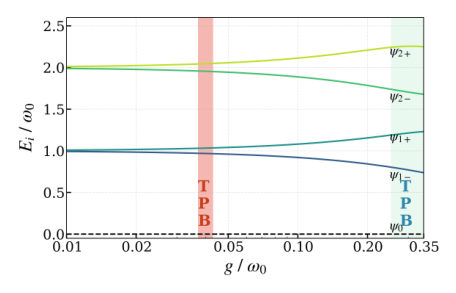
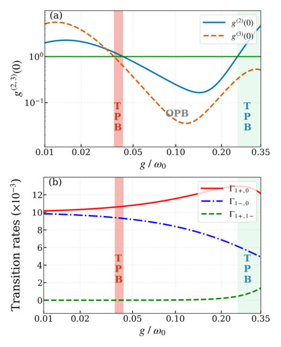
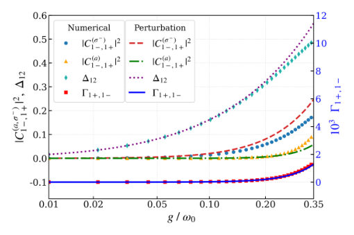
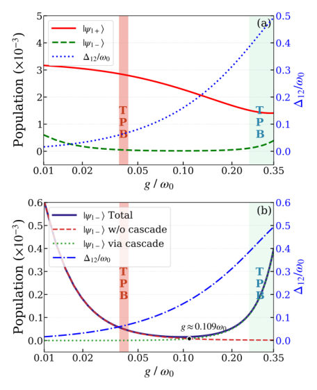
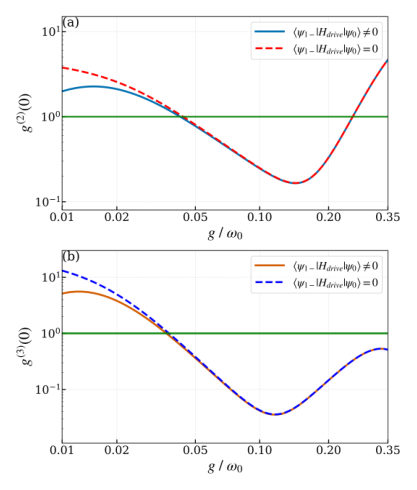
Summary. The authors report a novel 'weak two-photon blockade' (weak TPB) in a strongly coupled qubit-resonator system. This weak TPB is mechanistically distinct from the known strong TPB because it occurs when the cascade decay channel is closed, relying instead on anharmonicity effects during resonant driving. The findings advance understanding of how multi-photon blockades can arise through qualitatively different physical mechanisms.
Why it may be interesting. This work provides deep mechanistic insights into multi-photon blockade phenomena in cavity QED systems, suggesting that different physical regimes can support fundamentally distinct quantum control mechanisms.
Main problem. The research aims to discover and characterize a distinct 'weak two-photon blockade' (weak TPB) in a strongly coupled quantum system, differentiating it from the conventionally understood strong TPB.
Main result. A weak TPB phase emerges unconventionally when the cascade decay channel is closed, relying primarily on weak anharmonicity and resonant driving rather than dissipation mechanisms.
Method. The analysis employs a modified input-output formalism in the dressed-state basis derived from diagonalizing the parity-broken generalized quantum Rabi Hamiltonian.
Model / system. The system models a flux qubit coupled to a transmission-line resonator, described by a parity-broken generalized quantum Rabi model. The dynamics are analyzed using the Lindblad master equation and correlation functions.
Key observables. Two-photon blockade signatures ($g^{(2)}(0) > 1$ and $g^{(3)}(0) < 1$), population dynamics in dressed states, and energy splittings ($\Delta_{12}$).
Important parameters / regimes. Coupling strength ratio ($g/\omega_0$), which defines distinct regimes: weak coupling, intermediate (weak TPB), and ultrastrong coupling (strong TPB).
Assumptions / limitations. The analysis uses a modified input-output formalism to handle dissipation across varying coupling strengths, including the assumption of perturbative expansion for energy splittings.
Figures summary. Figure 1 illustrates the relevant low energy levels ($E_i$) as a function of $g/\omega_0$, demarcating the parameter regions corresponding to weak TPB and strong TPB regimes.
Paper structure. The paper systematically analyzes the system across different coupling regimes, calculating correlation functions ($g^{(2)}, g^{(3)}$) to identify blockade signatures. It contrasts the mechanism of the observed weak TPB (closed cascade channel, anharmonicity driven) against the conventional strong TPB (open cascade channel, dissipation driven).
We report a distinct two-photon blockade (termed as weak TPB) discovered in the strong-coupling regime of a parity-broken generalized quantum Rabi model, in addition to the other two-photon blockade (termed as strong TPB) in the ultrastrong coupling (USC) regime. In contrast to the strong TPB conventionally with opened cascade decay channel, the weak TPB phase emerges unconventionally with closed cascade decay channel. The closure of cascade channel originally allowed to open by parity breaking is unexpected and its opening in the strong-TPB regime is actually delayed. We extract a cubic law for the cascade transition rate that accounts for the suppression of cascade channel and the delayed opening in the two TPB regimes. Furthermore, we find that the population on the cascade state, which is crucial in the strong TPB, contrarily plays a minor role in the weak TPB. Instead, it is the upper state above the cascade that is relevant for the weak TPB. We demonstrate that the interplay of weak anharmonicity and resonant driving is the primary mechanism responsible for the upper-state population and the formation of weak TPB. Our analyses not only provide deeper insights into the nature of different TPBs, but also imply mechanism and manipulation diversities for the multi-photon blockade, which may open more avenues for developing quantum technologies on the manipulation level of individual quanta.
Authors: Dario Nichetti, Alessio Zaccone
Type: theory · Category: disordered systems and neural networks · PDF: https://arxiv.org/pdf/2607.09561v1
Analysis basis: full PDF text, analyzed in chunks
Topic relevance: non-equilibrium dynamics 3/5 · non-equilibrium universality 3/5 · Keldysh / 2PI / non-Gaussian methods 2/5 · analog quantum simulation 2/5 · driven-dissipative phase transition 2/5 · Frenkel-Kontorova 1/5 · correlated / nonlocal dissipation 1/5 · entanglement & information structure 1/5 · methods for driven-dissipative 1/5 · scars & prethermalization 1/5
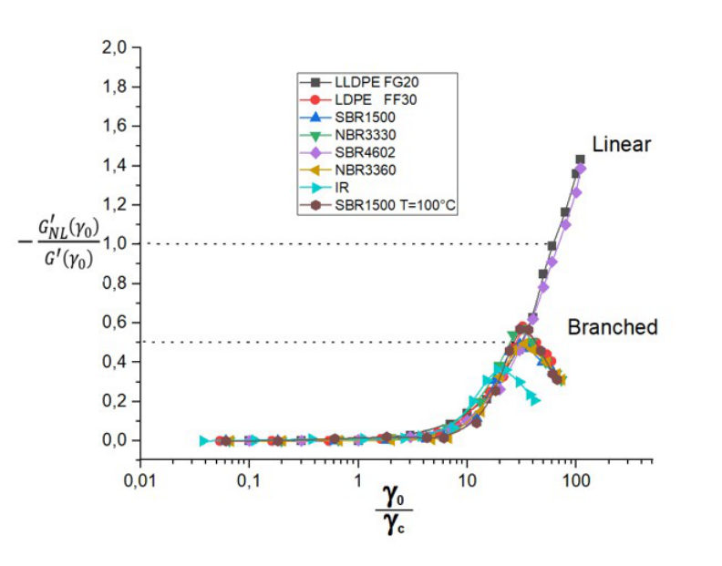
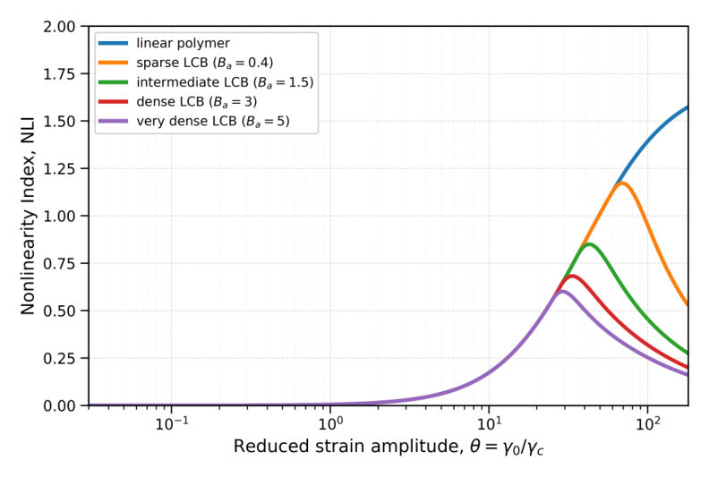
Summary. This paper develops a molecular tube theory to explain the nonlinear oscillatory rheology of branched polymer melts. It attributes the characteristic peak in the Nonlinearity Index (NLI) to a competition between initial backbone orientation buildup and subsequent relaxation caused by delayed arm retraction from branch points. The resulting framework successfully links macroscopic rheological measurements directly to fundamental polymer architecture parameters.
Why it may be interesting. While focused on polymer rheology, the underlying concepts—modeling non-equilibrium relaxation pathways, memory loss due to structural constraints (like branch points), and using an architectural parameter ($ ext{Ba}$) to govern a crossover in response—are analogous to modeling complex dynamics in disordered or constrained quantum systems.
Main problem. The study aims to explain the characteristic maximum followed by a decay in the Nonlinearity Index (NLI) observed during oscillatory shear of long-chain-branched polymer melts, which is absent in linear polymers.
Main result. The NLI peak arises from a competition between initial nonlinear backbone orientation buildup and subsequent relaxation caused by delayed arm retraction at branch points. The magnitude and width of this peak are governed by the architecture parameter $ ext{Ba}$.
Method. The authors developed an extended molecular tube theory that incorporates branch-point force transmission and models the time evolution of backbone orientation using reptative dynamics modified by arm survival probabilities.
Model / system. The system is long-chain-branched polymer melts subjected to oscillatory shear strain. The model extends linear polymer theories by explicitly accounting for the relaxation pathways associated with branched architectures.
Key observables. Nonlinearity Index ($ ext{NLI}(\gamma_0)$), which measures the ratio of nonlinear to linear elastic moduli, and backbone shear orientation ($S_{ ext{bb}}^{xy}$).
Important parameters / regimes. The branching parameter $ ext{Ba} = f_b Z_a / Z_{bb}$, which quantifies the relative importance of arm entanglements versus the orientable backbone span.
Assumptions / limitations. The theory approximates complex dynamics by focusing on long arms whose relaxation is dominated by delayed arm retraction, and it uses approximations for convolution integrals to simplify the memory kernel calculation.
Figures summary. Figures illustrate that linear polymers show monotonic NLI growth, while branched elastomers exhibit a distinct peak followed by decay. Increasing the branching parameter $ ext{Ba}$ lowers and broadens this characteristic NLI maximum.
Paper structure. The paper builds from defining the diagnostic observable (NLI) to developing an extended molecular tube theory that incorporates delayed arm retraction mechanisms. It then derives the functional form of $NLI_{br}( heta)$ based on the competition between orientation buildup and memory loss, concluding with predictions governed by the architecture parameter $ ext{Ba}$.
Long-chain branching profoundly modifies the nonlinear oscillatory response of entangled polymer melts by introducing arm-retraction pathways absent in linear polymers. We present a molecular tube theory that explains the characteristic maximum of the Nonlinearity Index (NLI) observed experimentally in long-chain-branched polymers. The theory extends the recently developed nonlinear tube-orientation description of linear polymers by incorporating branch-point force transmission and delayed arm retraction. The backbone initially develops nonlinear orientation as in the corresponding linear polymer, whereas long-arm retraction subsequently relaxes the stored branch-point tension and progressively erases backbone orientational memory. This competition produces a characteristic NLI maximum followed by a post-peak decay. The theory predicts two distinct nonlinear regimes corresponding to sparse and dense long-chain branching and introduces an architecture parameter governing the height and width of the nonlinear peak. The resulting framework provides a molecular interpretation of nonlinear Fourier rheology and directly links the nonlinear harmonic response to polymer architecture.
Authors: Józef Spałek, Piotr Kuterba, Mateusz Wójcik, Danuta Goc-Jagło, Maciej Fidrysiak, Leszek Spałek, Włodzimierz Wójcik
Type: theory · Category: strongly correlated electrons · PDF: https://arxiv.org/pdf/2607.09542v1
Analysis basis: full PDF text, analyzed in chunks
Topic relevance: Keldysh / 2PI / non-Gaussian methods 3/5 · analog quantum simulation 2/5 · driven-dissipative phase transition 2/5 · methods for driven-dissipative 2/5 · Kondo & dissipative impurity 1/5 · entanglement & information structure 1/5 · exotic spin models in light-matter 1/5 · non-equilibrium dynamics 1/5 · non-equilibrium universality 1/5
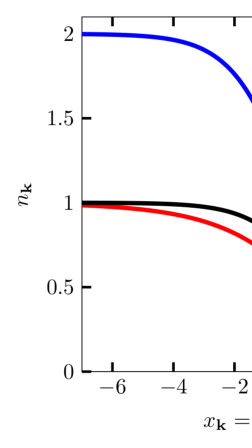
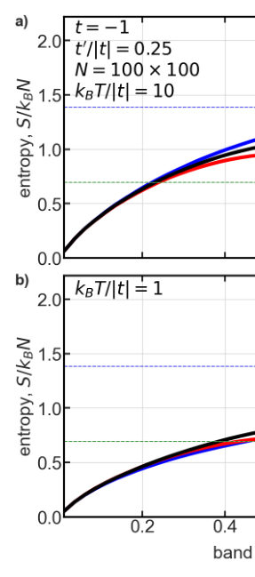
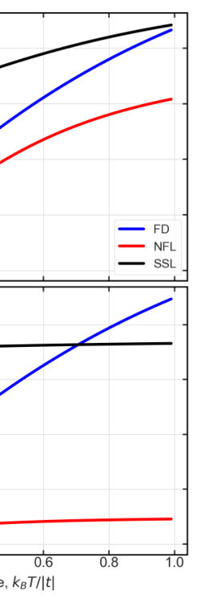
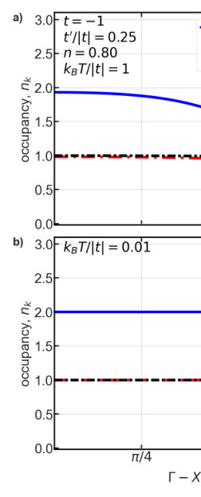
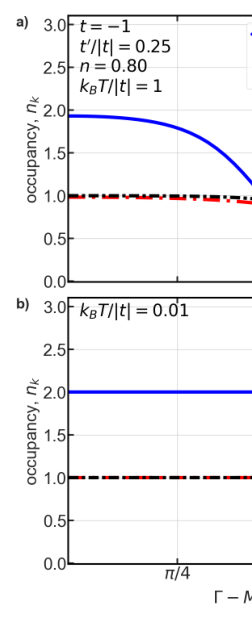
Summary. This paper introduces and compares three statistical frameworks—Fermi-Dirac, Non-Fermi Liquid (NFL), and Statistical Spin Liquid (SSL)—to describe fermions in correlated lattice models. The key finding is that the SSL statistics provide a physically consistent description of the Mott insulator state by predicting a finite entropy, suggesting a fundamental change in carrier nature at this quantum critical point.
Why it may be interesting. While focused on condensed matter theory, the concept of 'transmutation of statistics' as the system crosses a quantum critical point (Mott transition) is highly relevant to understanding emergent collective behaviors in strongly interacting many-body systems.
Main problem. The paper develops nonstandard statistical descriptions for strongly correlated fermionic systems that go beyond standard Fermi-liquid theory.
Main result. It shows that the Statistical Spin Liquid (SSL) statistics correctly predicts a finite, non-zero entropy in the Mott insulating limit ($n o 1$), contrasting with predictions from both Fermi-Dirac and Non-Fermi Liquid models.
Method. The authors calculate system entropy and statistical distribution functions by deriving generalized counting principles that incorporate specific state exclusions for different correlated regimes (NFL vs. SSL).
Model / system. The study analyzes strongly correlated fermions on a two-dimensional square lattice, modeled using concepts derived from Hubbard lattice models, characterized by filling $n \in [0, 1]$.
Key observables. System entropy ($S$), statistical distribution function ($n_{k\sigma}$), and chemical potential ($\mu$).
Important parameters / regimes. Band filling $n \in [0, 1]$, relative temperature $k_B T/|t|$, and the Mott-insulator limit ($n o 1$).
Assumptions / limitations. The SSL formulation assumes a two-fluid system with distinguishable spin subsystems ($\uparrow$ and $\downarrow$) in general situations.
Figures summary. Figures compare $n_k$ vs. energy for FD, NFL, and SSL; they also plot entropy ($S$) vs. filling ($n$), and chemical potential ($\mu$) vs. filling ($n$) across the different statistical regimes.
Paper structure. The paper systematically compares three statistics (FD, NFL, SSL) by calculating their respective entropies and distribution functions for a 2D lattice system, paying special attention to the behavior near the Mott insulator transition.
We discuss two different cases of strongly correlated fermions statistics. The first of them is the non-Fermi liquid (NFL) case, $i.e.$, that of fermions with exclusion of doubly occupancy of quasimomentum states $\{\bf k\}$ with opposite spins ($\uparrow\downarrow$). The second is that of statistical spin liquid (SSL) case, in which the fermion spins hop around and mix with the holes (unoccupied) states. For both cases we calculate the system entropy and the corresponding statistical distribution function, analyzed for a two-dimensional square-lattice filling $n\in [0,1]$ and relative temperature $k_B T/|t|$, where $t<0$ is the nearest neighbor hopping integral. We are particularly interested in the situation when the system of itinerant fermions reduce to the Mott-insulator state for the half-filled band ($n\to1$). This limiting situation signals a qualitative difference between the present SSL statistics and that of uncorrelated fermions representing normal Fermi-liquid state.
Authors: Steven Rayan
Type: theory · Category: quantum information and computing · PDF: https://arxiv.org/pdf/2607.08911v1
Analysis basis: full PDF text, analyzed in chunks
Topic relevance: quantum measurements 3/5 · entanglement & information structure 2/5 · measurement-induced transitions 2/5 · Keldysh / 2PI / non-Gaussian methods 1/5 · analog quantum simulation 1/5 · correlated / nonlocal dissipation 1/5 · driven-dissipative phase transition 1/5 · methods for driven-dissipative 1/5
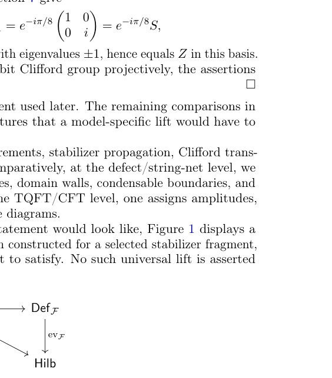
Summary. This work develops a sophisticated field-theoretic approach to Quantum Error Correction by modeling errors as boundary data ('footprints') in topological theories. It proves key theorems relating measurement compatibility (syndrome-admissibility) to exact correctability and establishes a conditional threshold theorem for noise resilience. The paper bridges quantum information theory with advanced mathematics like conformal field theory and algebraic geometry.
Why it may be interesting. It provides deep connections between abstract mathematics (category theory, geometry) and practical quantum computation problems like fault tolerance, offering new theoretical tools to analyze error correction beyond standard stabilizer formalisms.
Main problem. Developing a rigorous field-theoretic framework for Quantum Error Correction (QEC) by treating error histories as boundary data ('footprints') within topological or conformal field theory structures.
Main result. The paper establishes that exact correctability is equivalent to a fibrewise Knill–Laflamme condition for syndrome-admissible algebras, and proves a conditional Peierls-type threshold theorem for local noise in growing code families.
Method. It employs advanced mathematical tools from unitary fusion categories, conformal field theory (calculating conformal blocks), and diagrammatic techniques (like the ZX-calculus) to translate QEC into an inference problem over physical histories.
Model / system. The model is general topological/fusion-space codes, exemplified by surface codes and the Ising model. The focus is on how local measurements ('syndromes') constrain the global error history ('footprint').
Key observables. Footprints (locally visible boundary data from errors), Syndrome information (measured projections of the footprint), Conformal-block likelihood data, and Error correction failure probability ($\Pr_L(\mathrm{fail})$).
Important parameters / regimes. Error rate ($p$), Code size/geometry ($|Ω_L|$), and the non-zero constant error rate threshold.
Assumptions / limitations. The analysis relies on hypotheses such as contractible-vacuum locality, bounded connected-region growth, and local neutralizability for the threshold theorem to hold.
Paper structure. The paper progresses by defining the field-theoretic framework using fusion categories, establishing the core algebraic condition (Knill–Laflamme), demonstrating concrete examples (Ising theory), proving a conditional threshold theorem for noise resilience, and concluding with advanced mathematical generalizations involving Hopf algebras and Higgs bundles.
We develop a field-theoretic framework for quantum error correction centred on fusion-space codes in unitary fusion categories. Admissible clusters determine total-charge sectors and orthogonal footprint projectors recording locally visible data left by error histories. The central distinction is between diagnostic footprint algebras and syndrome-admissible commuting algebras: the latter can be measured without revealing logical information and resolve chosen error representatives into measured sectors. For such algebras, exact correctability is equivalent to fibrewise Knill--Laflamme conditions, yielding a measure-then-recover factorization. Under a contractible-vacuum locality hypothesis, closed neutral composites give a categorical sufficient criterion for scalar action on the code. In the Ising theory, four $σ$ punctures show that pair-charge footprints can be complementary logical diagnostics and realize an exact one-qubit Clifford shadow. A proper six-$σ$ code instead admits a syndrome-admissible pair-charge measurement and exact recovery from an explicit Majorana bilinear error. A second bilinear has the same measured footprint but differs by a logical bit flip, producing a concrete nontrivial footprint fibre and genuine decoding ambiguity. We also formulate conformal-block likelihood data and compute geometry-dependent Ising four-point weights. For growing code families, we prove a conditional Peierls-type threshold theorem: bounded connected-region growth, local stochastic noise, local neutralizability of small residual components, and componentwise decoder balance imply $\Pr_L(\mathrm{fail})\le C|Ω_L|e^{-cL}$ below a nonzero constant error rate. We conclude with representation-theoretic and algebro-geometric directions involving tube and Hopf algebras, Yangian-type structures, Higgs bundles, spectral curves, Jacobians, and abelian varieties.
Authors: Aleksander Głódkowski
Type: theory · Category: quantum gases · PDF: https://arxiv.org/pdf/2607.09427v1
Analysis basis: full PDF text, analyzed in chunks
Topic relevance: Keldysh / 2PI / non-Gaussian methods 3/5 · methods for driven-dissipative 2/5 · non-equilibrium dynamics 2/5 · analog quantum simulation 1/5 · correlated / nonlocal dissipation 1/5 · correlated cavity matter 1/5 · driven-dissipative phase transition 1/5 · non-equilibrium universality 1/5
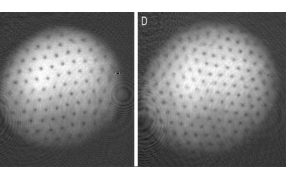
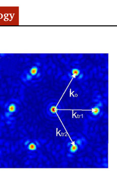
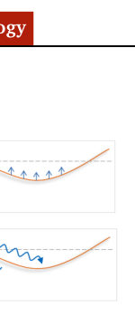
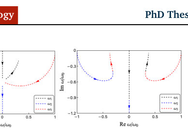
Summary. This paper develops a theoretical framework to describe many-body systems with nonuniform symmetries, moving beyond the well-understood case of uniform symmetries. It shows that these symmetries impose kinematic constraints on low-energy dynamics, leading to novel physical effects such as modified sound modes and unusual transport phenomena in quantum fluids.
Why it may be interesting. It provides a rigorous extension of Goldstone's theorem and superfluid hydrodynamics into regimes where symmetries are spatially varying or non-local, which is crucial for understanding complex quantum fluids like BECs.
Main problem. Developing effective theories for many-body systems whose symmetries are nonuniform, meaning their generators do not commute with spacetime translations.
Main result. Nonuniform symmetries constrain the dynamics of existing degrees of freedom rather than introducing new gapless modes, leading to modified excitation spectra and unconventional transport phenomena.
Method. The authors develop a unified framework using effective field theory principles to analyze how these constraints reshape the infrared dynamics at both zero and finite temperatures.
Model / system. The study applies to general many-body systems, with specific examples including quantum vortex crystals (superfluids) and dipole-conserving fluids.
Key observables. Modified dispersion relations of collective excitations, anomalous diffusion rates, and constraints on macroscopic hydrodynamic currents.
Important parameters / regimes. Low energy/long wavelength limits; finite temperature ($T$); the nature of symmetry breaking (uniform vs. nonuniform).
Assumptions / limitations. The low-energy dynamics are governed by symmetries, allowing for an effective field theory description.
Paper structure. The work progresses from establishing the general theoretical framework to analyzing specific physical manifestations, such as vortex crystals and hydrodynamic behavior under nonuniform symmetry constraints.
The low-energy dynamics of many-body systems is governed by gapless modes whose properties are dictated by symmetry. Their existence follows from Goldstone's theorem, while their effective description at zero temperature is determined by the pattern of symmetry breaking. At finite temperature, an analogous role is played by hydrodynamics, which describes the universal behavior of many-body systems over long times and large distances. These principles are well understood for uniform symmetries, which act homogeneously in spacetime and lead to a correspondence between massless Goldstone modes and broken generators, as well as gapless hydrodynamic modes and conserved charges. However, this simple picture changes in the presence of nonuniform symmetries, whose generators do not commute with spacetime translations. The low-energy implications of these symmetries remain less understood, as they do not introduce additional gapless modes but instead constrain the dynamics of the existing degrees of freedom. In this thesis, we develop a unified framework for many-body systems with nonuniform symmetries and show that their effects can be understood in terms of additional fields that are not independent at low energies and can be eliminated, leading to kinematic constraints that reshape the infrared dynamics. In systems with spontaneous symmetry breaking, this mechanism modifies the effective theory and often softens the dispersion relations of the remaining modes. At finite temperature, it manifests in hydrodynamics as constraints on macroscopic currents. As a result, nonuniform symmetries give rise to qualitatively new physical phenomena, including modified spectra of collective excitations, exemplified by transverse Tkachenko oscillations in quantum vortex crystals, and unconventional transport phenomena, such as anomalously slow diffusion and softened sound modes in dipole-conserving systems.
Authors: Riccardo Rigon
Type: theory · Category: statistical mechanics · PDF: https://arxiv.org/pdf/2607.09416v1
Analysis basis: full PDF text, analyzed in chunks
Topic relevance: non-equilibrium dynamics 3/5 · non-equilibrium universality 3/5 · driven-dissipative phase transition 2/5 · Frenkel-Kontorova 1/5 · Keldysh / 2PI / non-Gaussian methods 1/5 · correlated / nonlocal dissipation 1/5 · methods for driven-dissipative 1/5
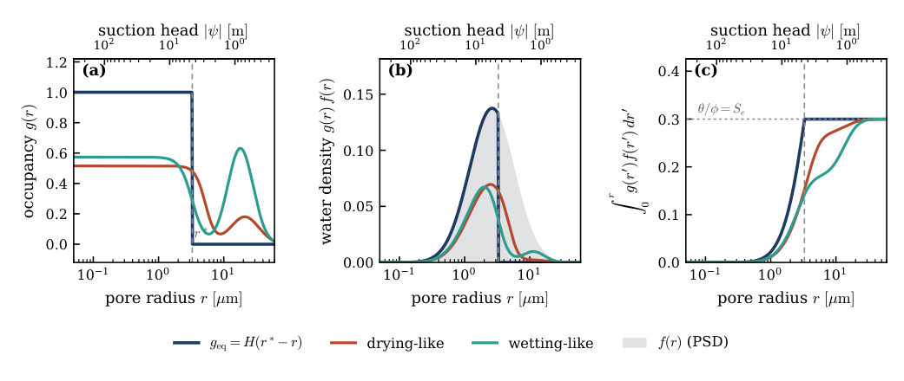
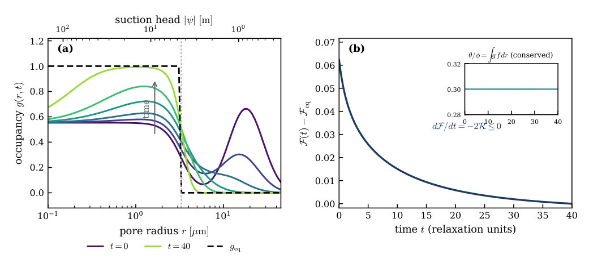
Summary. This paper presents a unified statistical-mechanical theory for water transport in unsaturated soil. It derives a continuum field equation that naturally bridges the gap between slow, quasi-static flow (Richards' equation) and fast, non-equilibrium preferential flow regimes using a dimensionless Damköhler number. The work provides a rigorous framework based on minimizing free energy while accounting for rate-dependent memory effects.
Why it may be interesting. While focused on porous media, the framework of describing irreversible dynamics via an Onsager gradient flow descending a free energy functional is highly relevant to non-equilibrium statistical mechanics used in open quantum systems or complex chemical reaction networks.
Main problem. To develop a comprehensive statistical-mechanical theory for water dynamics in unsaturated soil that unifies classical rate-independent models with non-equilibrium, fast-flow regimes.
Main result. The theory yields a continuum field equation ($\partial_t g + abla \cdot F = C[g] - E - T$) whose behavior is governed by the pore-resolved Damköhler number ($Da$), unifying quasi-static (Richards') and preferential flow regimes.
Method. The theory constructs the dynamics across three scales—microscopic inter-pore transfers, mesoscopic master equations, and a continuum limit—identifying the evolution as an Onsager gradient flow descending the Gibbs free energy.
Model / system. The system is unsaturated porous media (soil) characterized by pore radii ($r$) and position ($x$). The state variable is the pore-occupancy $g(r, x, t)$, which evolves based on chemical potential differences ($\Phi$) acting as the driving force.
Key observables. Pore-occupancy $g(r, x, t)$, hydraulic conductivity $K[g]$, hysteresis loop area ($H$), and the macroscopic water content $ heta$.
Important parameters / regimes. Pore-resolved Damköhler number $Da(r, x)$; capillary length ($\ell_c$); pore size distribution $f(r)$.
Assumptions / limitations. Inputs (pore geometry) are assumed measurable from micro-CT; the theory is general and applies where local thermodynamic equilibria can be defined.
Paper structure. The paper builds the continuum equation by deriving it sequentially: first establishing microscopic transfer rates, then defining the mesoscopic master equation, and finally taking the continuum limit to obtain the full kinetic balance equation.
We develop a statistical-mechanical theory of water in unsaturated soil whose outcome is a continuum field equation for the pore-occupancy g(r,x,t), the fraction of pores of radius r that are water-filled at position x and time t. The theory is built across three scales: microscopic inter-pore transfers set by Hagen-Poiseuille rates and a driving potential (the difference of pore-class chemical potentials, taken in capillary-gravitational form but open to adsorptive, osmotic, or thermal refinement); a mesoscale master equation relaxing the occupancy toward the equilibrium step g_eq=H(r*-r); and, on contracting the averaging volume to a point, the continuum balance d_t g + div F = C[g] - E - T, of which everything else is a limit, a moment, or a boundary resolution. The kinetic equation is an Onsager gradient flow descending the Gibbs free energy, with an H-theorem for the isothermal unforced system and mass conservation as its zeroth moment. A single dimensionless group, the pore-resolved Damkohler number Da(r,x), organizes the behavior and unifies phenomenologies long modelled separately. A Chapman-Enskog reduction identifies Richards' equation as the quasi-static (Da->0) limit, with matric potential and hydraulic conductivity K emerging only there and K vanishing below the percolation threshold; capillary-bundle and critical-path models are its diagonal and spectral limits. Hysteresis is the holonomy of a forcing bundle, a geometric phase rather than per-pore bistability, with a falsifiable loop-area law H ~ I^2. Preferential flow is what the same equation does where Da>1, so the Richards/preferential-flow dichotomy becomes a continuous Da-controlled crossover. Out of the quasi-static limit g(r) is the irreducible state variable. All inputs are geometric properties of the pore network, measurable from micro-CT and calibrated against no macroscopic data.
Authors: Richard Gast, Shotaro Takasu, Helmut Schmidt, Ann Kennedy
Type: both · Category: disordered systems and neural networks · PDF: https://arxiv.org/pdf/2607.09516v1
Analysis basis: full PDF text, analyzed in chunks
Topic relevance: methods for driven-dissipative 3/5 · Keldysh / 2PI / non-Gaussian methods 2/5 · non-equilibrium dynamics 2/5 · analog quantum simulation 1/5 · correlated / nonlocal dissipation 1/5 · driven-dissipative phase transition 1/5 · non-equilibrium universality 1/5
Summary. This paper presents a novel Lorentzian Mixture Mean-Field (LMMF) method designed to analyze coupled oscillator networks whose natural frequencies follow arbitrary distributions. By approximating the true distribution as a sum of Lorentzians, it achieves significant dimensionality reduction while maintaining high accuracy compared to existing methods. This technique is successfully applied both to theoretical Kuramoto models and to analyzing complex electrophysiological data from real neurons.
Why it may be interesting. The development of a robust mean-field reduction technique applicable to arbitrary disorder distributions is highly valuable. While the system itself is classical/biological, the mathematical machinery (dimensionality reduction via spectral methods applied to complex systems) shares conceptual links with analyzing many-body quantum states or effective Hamiltonians in disordered quantum systems.
Main problem. The primary challenge is understanding the complex dynamics of globally coupled phase oscillator systems when the intrinsic frequencies ($\omega_i$) are heterogeneous (arbitrary distributions). The goal is to achieve a low-dimensional mean-field description for such systems.
Main result. The authors introduce the Lorentzian Mixture Mean-Field (LMMF) method, which successfully extends dimensionality reduction techniques from simple frequency distributions (like Lorentzian) to arbitrary empirical distributions by approximating them as mixtures of Lorentzians.
Method. The core method involves approximating an arbitrary probability distribution $ ho(\omega)$ using a finite sum of Lorentzian functions ($ ho_M^*(\omega)$). This approximation is then used within the LMMF framework to derive low-dimensional mean-field equations for system observables like average phase coherence $R(t)$.
Model / system. The model studied is globally coupled phase oscillators (e.g., Kuramoto models) and, in an application context, Quadratic Integrate-and-Fire (QIF) neural networks. Heterogeneity is introduced via the intrinsic frequency distribution $ ho(\omega)$ or the distance-to-threshold $D_i$.
Key observables. Average phase coherence dynamics ($R(t)$), bifurcation structure (e.g., Hopf bifurcations, fold bifurcations), and steady-state firing rates.
Important parameters / regimes. The heterogeneity parameters defining the Lorentzian mixture components ($\mathbf{u}$ in Eq. 5) and global coupling strength $K$.
Assumptions / limitations. The method assumes that an arbitrary distribution can be accurately approximated by a finite sum of Lorentzian distributions ($M$ ensembles). The LMMF derivation itself relies on mean-field approximations.
Figures summary. Figures illustrate the fitting performance of the LMMF model to empirical data (e.g., Gaussian mixtures for frequency distributions) and compare the resulting dynamics ($R(t)$) against previous theoretical approaches, showing superior accuracy and lower dimensionality.
Paper structure. The paper first establishes the general mean-field reduction technique by approximating arbitrary distributions as Lorentzian mixtures. It then applies this to Kuramoto oscillators, comparing LMMF results favorably against prior methods (Skardal's). Finally, it demonstrates the method's utility by applying it to analyze electrophysiological data from cortical neurons.
Understanding the dynamical properties of coupled phase oscillator systems with heterogeneous oscillator frequencies has been a long-standing challenge of complex systems theory. While the seminal work of Ott and Antonsen dramatically improved our theoretical understanding of coupled phase oscillators for a small family of oscillator frequency distributions, we here present a mean-field reduction method for arbitrary frequency distributions. Our method leverages the drastic dimensionality reduction obtained for Lorentzian frequency distributions, and combines it with a data-driven multi-ensemble approach. As such, the method renders the Ott-Antonsen equations directly applicable to empirical distributions of phase oscillator frequencies, often achieving a drastic dimensionality reduction and allowing to study real-world physical and biological systems by means of stability, sensitivity, and bifurcation analyses.
Authors: Songyi Liu, Yongjun Wang, Baoshan Wang, Yunyi Jia, Chang He
Type: theory · Category: other · PDF: https://arxiv.org/pdf/2607.09047v1
Analysis basis: full PDF text, analyzed in chunks
Topic relevance: quantum measurements 3/5 · entanglement & information structure 2/5 · measurement-induced transitions 2/5 · Keldysh / 2PI / non-Gaussian methods 1/5 · analog quantum simulation 1/5 · correlated / nonlocal dissipation 1/5 · driven-dissipative phase transition 1/5
Summary. This paper analyzes incompatibility in quantum mechanics using partial Boolean algebras (pBAs) and introduces the 'exclusivity graph' as a structural tool. The main finding is that many incompatible scenarios can be mathematically shown to be equivalent to structures embeddable into classical Boolean algebras, suggesting that mere incompatibility alone does not guarantee non-classicality.
Why it may be interesting. This work provides deep structural insights into the mathematical foundations of quantum contextuality, which is crucial for understanding measurement limitations in any quantum system, including those studied in AMO physics or quantum information theory.
Main problem. The research investigates the structural properties of incompatibility scenarios in quantum mechanics and determines if these scenarios are fundamentally non-classical or can be realized classically.
Main result. Every exclusivity graph is proven to be the atom graph of an exclusive partial Boolean algebra (pBA), which can be embedded into a standard Boolean algebra, suggesting that many incompatible scenarios are classically realizable.
Method. The authors use the mathematical framework of partial Boolean algebras (pBAs) and introduce the 'exclusivity graph' to precisely characterize incompatibility structures. They develop a unified method to map these abstract structures onto classical games.
Model / system. The model is based on quantum observables whose incompatibilities are studied using pBAs, which capture the logical structure of measurement outcomes. The analysis compares this framework against standard Boolean algebras and known contextuality examples like the Peres-Mermin square.
Key observables. Incompatibility itself, exclusivity graphs, partial Boolean algebras (pBA), and atom graphs.
Important parameters / regimes. The specific case $(1, 2, 2)$ for two incompatible dichotomic observables is used as a primary example.
Assumptions / limitations. The analysis assumes that the logical structure of incompatibility can be captured by pBAs, and it notes limitations regarding the full characterization (necessary/sufficient conditions) for exclusivity graphs.
Figures summary. Figures illustrate the partial Boolean algebra $A(1,2,2)$ for two observables, the associated exclusivity graph, and examples like the Peres-Mermin square demonstrating compatibility structures.
Paper structure. The paper progresses by establishing the pBA framework to study incompatibility. It introduces the exclusivity graph as a characterization tool, proves that these graphs correspond to specific types of pBAs (epBA), and concludes by showing how these structures can be mapped onto classical games.
Incompatibility constitutes a fundamental aspect of quantum mechanics. However, not every quantum observable non-classical property arises from incompatibility, nor can all quantum scenarios be fully captured by incompatibility alone. Within the framework of partial Boolean algebra (pBA), we research the structural properties of incompatibility scenarios. We introduce a unified method to realize any incompatibility scenario via a classical game, and the construction is extendable to any scenario embeddable into a Boolean algebra. The exclusivity graph offers a precise characterization of incompatibility scenarios. We prove that every exclusivity graph is the atom graph of an exclusive pBA, which is embedded into a Boolean algebra. These results provide a necessary condition for exclusivity graphs and a sufficient condition for atom graphs.
Authors: Matheus H. Zambianco, Eduardo Martín-Martínez
Type: theory · Category: other · PDF: https://arxiv.org/pdf/2607.09660v1
Analysis basis: full PDF text, analyzed in chunks
Topic relevance: Keldysh / 2PI / non-Gaussian methods 3/5 · entanglement & information structure 3/5 · non-equilibrium dynamics 2/5 · correlated / nonlocal dissipation 1/5 · driven-dissipative phase transition 1/5 · methods for driven-dissipative 1/5
Summary. This paper analyzes how different types of nonlinear particle detectors respond when placed across a Rindler firewall. By comparing couplings to local observables like energy density versus momentum, the authors demonstrate that quadratic couplings lead to unphysical divergences at the horizon. This strongly suggests that such non-linear interactions are incompatible with the sharp firewall picture.
Why it may be interesting. This work is highly relevant to theoretical physics concerning quantum field theory in curved spacetime, black hole thermodynamics, and the information paradox, touching upon concepts of entanglement structure across horizons.
Main problem. The study investigates the response of nonlinear particle detectors coupled to local observables (like energy density or momentum) when crossing a Rindler firewall.
Main result. Nonlinear couplings, particularly those involving quadratic momentum terms, lead to unavoidable formal divergences at the firewall, suggesting incompatibility with the standard sharp firewall model. The pathologies are attributed to the discontinuity of correlations across the horizon rather than the detector model itself.
Method. The authors employ a distributional framework and perturbative expansion in the coupling strength to calculate detector response functions using two-point correlation functions derived from the Wightman function.
Model / system. The system involves Unruh-DeWitt detectors coupled to a quantum scalar field ($\hat{\phi}$) in Minkowski spacetime, specifically analyzing the state mimicking correlations across the Rindler horizon (firewall). Couplings are tested for local observables: energy density ($\hat{T}_{\mu u}$) and quadratic momentum ($\hat{\pi}^2$).
Key observables. Detector response function ($F_0$), Energy Density Correlation Function, Quadratic Momentum Correlation Function.
Important parameters / regimes. Coupling strength ($\lambda$), Detector switching function $\chi(t)$, Dimensionality (1+1D vs 3+1D), and the energy gap ($\Omega$).
Assumptions / limitations. The analysis assumes an initial state $\hat{ ho}_0 = |g angle\langle g| \otimes |0 angle\langle 0|$ and utilizes normal ordering for stress-energy density renormalization.
Figures summary. Figures compare dimensionless response functions $F(\pi)_0$ and $ rac{T^2}{2} F(\pi^2)_0$ versus frequency ($\omega$) in 1+1D, and illustrate the propagation of decoupled sectors across the firewall.
Paper structure. The paper develops a distributional framework to calculate detector response functions for different couplings. It compares results in 1+1D and 3+1D dimensions, showing proportionality relationships between energy density and momentum coupling responses while highlighting divergences specific to nonlinear terms at the firewall.
We investigate Unruh-DeWitt detectors coupled to composite observables of a quantum scalar field, including quadratic coupling to the field momentum and coupling to the local energy density. We develop a distributional framework for evaluating the corresponding detector response functions and apply it to detectors crossing the Rindler firewall. While we recover the finite response of the derivative-coupling model, we show that quadratic momentum coupling leads to ill-defined products of distributions and unavoidable formal $δ(0)$-type divergences. Since the local energy-density response is closely tied to the quadratic momentum response, our results provide strong evidence that the standard sharp firewall model is incompatible with nonlinear detector couplings to local observables. Our analysis further suggests that these pathologies originate from the discontinuous severing of correlations across the Rindler horizon, rather than from the detector model itself.
← Index · ← Previous · Next →